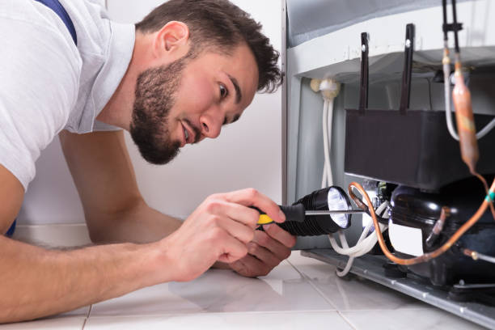

Need appliance repair in Ponderosa Park Colorado ? Trust our skilled technicians for efficient service on refrigerators, washers, dryers, and more. Affordable, quick, and professional care tailored to your needs!
Click Here To Call Us (877) 848-1711Are your appliances acting up in Ponderosa Park Colorado ? Look no further! Our expert appliance repair services are here to save the day. We specialize in diagnosing and fixing all major household appliances, including refrigerators, washers, dryers, ovens, dishwashers, and more. With years of experience, we understand the importance of having fully functional appliances in your home.
At our appliance repair company, customer satisfaction is our top priority. We pride ourselves on offering fast, reliable, and affordable solutions across all neighborhoods in Ponderosa Park Colorado . Our team of skilled technicians is trained to work on all major brands, including Whirlpool, LG, Samsung, GE, and Maytag. No problem is too big or small for us to handle. Whether it’s a refrigerator that won’t cool or a washer that won’t spin, we’ve got you covered.
Why choose us? We use the latest tools and techniques to ensure your appliance is fixed right the first time. Our services are backed by a satisfaction guarantee, so you can rest assured you’re in good hands. Plus, we offer same-day service in Ponderosa Park Colorado to get your appliances back in working order as quickly as possible.
Don’t let faulty appliances disrupt your day. Contact us today for professional appliance repair services in Ponderosa Park Colorado and experience the difference!
Residential & commercial Appliance Repair
Quality services at affordable prices
Immediate 24/ 7 emergency services


When your home appliances break down, you need a reliable, experienced, and quick solution. At our Ponderosa Park Colorado appliance repair company, we specialize in delivering top-notch repair services for a wide range of household appliances. From refrigerators and washers to dryers and ovens, our team of certified experts is equipped to handle all your appliance issues with precision and care.
What sets us apart from other appliance repair services in Ponderosa Park Colorado is our commitment to customer satisfaction. We understand how crucial your appliances are to your daily life, and that’s why we offer fast, efficient service that gets your home back to normal as quickly as possible. Our technicians use advanced diagnostic tools to pinpoint the exact problem and offer cost-effective repair solutions that extend the lifespan of your appliances.
We pride ourselves on transparent pricing, professional customer service, and a strong track record of successful repairs across Ponderosa Park Colorado . Whether you're dealing with a malfunctioning fridge or a faulty dishwasher, our experts are just a call away to restore your appliance to its optimal performance.
For the best appliance repair service in Ponderosa Park Colorado trust the experts who put your needs first. Contact us today to schedule your repair and experience the difference in service that only our experienced team can provide!
Residential & commercial Appliance Repair
Quality services at affordable prices
Immediate 24/ 7 emergency services
As technology evolves, so do the appliances in our homes and businesses. Our Smart Appliance Repair Services are designed to address the complexities of modern smart devices, including refrigerators, ovens, and laundry machines that integrate with Wi-Fi and smart home systems. Our skilled technicians stay up-to-date with the latest technology and can troubleshoot connectivity issues, app malfunctions, and other problems unique to smart appliances. Choosing us means you will receive expert service tailored to the evolving needs of your home or business. Trust our expertise for all your smart appliance repairs.

Portable appliances provide convenience, from mini-fridges to compact microwaves. However, they can encounter issues over time. Our Portable Appliance Repairs in Ponderosa Park Colorado address everything from power failures to heating problems, ensuring your appliances serve you well. We specialize in diagnosing issues promptly and providing effective repairs, allowing you to continue enjoying the flexibility these appliances offer. Trust our expertise for your portable appliance needs, and get ready to enjoy convenience without interruption .

More and more homeowners and businesses are focusing on energy efficiency in their appliance choices. Our Energy-Efficient Appliance Repair Services specialize in maintaining and repairing eco-friendly appliances to ensure they continue performing at their best. Whether it's washing machines, dishwashers, or refrigerators, our experienced technicians can address mechanical faults that may be compromising energy efficiency. We focus on sustainable solutions and high-quality repairs, extending the life of your appliances while also helping you save on energy costs. Reach out to us for energy-efficient appliance expertise .

Appliance emergencies can happen at any time, and when they do, you need fast and reliable service. Our Emergency Appliance Repair Services in Ponderosa Park Colorado are available around-the-clock to respond to your urgent repair needs. Our skilled technicians are on call for everything from broken refrigerators to malfunctioning HVAC systems, ready to diagnose and resolve issues quickly. We understand the importance of getting your appliances back in working order without delay. Select us for swift, professional service that you can rely on when it matters most .

Preventive maintenance is key to prolonging the life of your appliances and avoiding unexpected failures. Our Appliance Maintenance Plans are designed for both residential and commercial clients, providing scheduled services that include inspections, cleanings, and performance checks. Our experienced technicians will catch issues before they become costly repairs, ensuring that your appliances remain efficient and reliable. With our transparent pricing and comprehensive plans, you can schedule maintenance at your convenience and enjoy peace of mind knowing that your appliances are in good hands. Choose us for dedicated maintenance support.
Proper installation is crucial for appliance performance and safety. At Appliance Repair, in addition to repairs, we provide expert appliance installation and setup services. Our skilled technicians will ensure your new appliances are properly installed, compliant with safety regulations, and functioning flawlessly. We take pride in our meticulous approach, guaranteeing you enjoy your appliances' benefits with peace of mind. For professional installation and reliable repairs trust us to get it done right.

Gas appliances require specialized training for safe and effective repairs. At Appliance Repair, we provide gas appliance repair services that address various issues with stoves, ovens, and heaters. Our certified technicians have undergone extensive training to ensure repairs are compliant with safety standards and regulations. We focus on identifying and rectifying problems quickly to restore comfort and functionality to your home. When safety and precision matter choose us for dependable gas appliance repairs.

The control panel is the command center of your appliances, and issues here can render them useless. Our Appliance Control Panel Repair Services specialize in diagnosing and fixing problems with appliance control systems. Whether it’s a malfunctioning display or unresponsive buttons, our skilled technicians are equipped to handle these issues with precision. We focus on restoring functionality and ensuring that your appliances perform as intended. With our commitment to quality and customer service, you can trust us for reliable control panel repairs .

Vintage and antique appliances hold charm and nostalgia, but they may need specialized care due to their unique construction. At Appliance Repair, we offer vintage and antique appliance repair services that respect the integrity of your treasured items. Our technicians possess in-depth knowledge of older appliance models, utilizing traditional and modern techniques to restore them without compromising their character. With our focus on craftsmanship and attention to detail, we provide exceptional service for preserving your vintage treasures . Choose us for your antique repair needs.
Years Experience
Expert Technicians
Satisfied Clients
Compleate Projects
At Appliance Repair, we understand the inconvenience and frustration that comes with a malfunctioning appliance. Serving homes and businesses across all cities in Ponderosa Park Colorado our team of certified technicians is committed to providing prompt, reliable, and affordable solutions. Whether it's your refrigerator, washing machine, or stove, we have the expertise to get your appliances back in top condition.
What sets us apart from other repair services in Ponderosa Park Colorado is our unwavering dedication to quality. We use the latest diagnostic tools to quickly identify the root cause of the issue, ensuring that repairs are both efficient and long-lasting. Our technicians are highly trained and stay updated on the latest appliance technologies to deliver precise repairs every time.
We pride ourselves on offering transparent pricing with no hidden fees, so you can trust that you’re receiving excellent service at a fair price. Our flexible scheduling options cater to your busy life, and we always strive to offer same-day or next-day service to minimize any disruption to your routine.
What’s more, we stand behind our work with a satisfaction guarantee. If you’re not completely satisfied with our service, we’ll do everything we can to make it right. Choose Appliance Repair for fast, reliable, and affordable appliance repair across Ponderosa Park Colorado . Experience the difference of working with the best in the business!
In today's fast-paced world, a malfunctioning refrigerator can cause significant inconvenience, leading to spoiled food and wasted resources. At Appliance Repair, we specialize in refrigerator repair services that prioritize efficiency and quality. Our expert technicians are well-versed in diagnosing and repairing all types of refrigerators, from standard models to advanced smart fridges. With our comprehensive knowledge of refrigerator components and technologies, we ensure timely and effective repairs, allowing you to preserve your food and peace of mind. Choose us for our commitment to customer satisfaction, fast service, and reliable repairs that stand the test of time .
A malfunctioning washing machine can put a serious dent in your laundry routine. Whether your machine won't spin properly or is leaking water, we’re here to help with our professional Washing Machine Repair services . We pride ourselves on our meticulous attention to detail and prompt response times. Our technicians have extensive training and knowledge in addressing a wide variety of washer issues, including front-load and top-load machines. We offer fast, efficient repairs at competitive rates, ensuring you're back to your regular laundry tasks as soon as possible. By choosing our services, you not only receive expert repairs but also valuable advice on how to maintain your machine's performance long-term. Trust us to restore your washing machine to optimal working condition .
A broken dryer can create a major inconvenience, hindering your ability to dry clothes effectively. Our Dryer Repair Services cater to both residential and commercial clients, addressing issues such as lint buildup, drum not spinning, and heating problems. We understand the importance of having a functioning dryer, especially in a busy household or commercial laundry setting. Our experienced technicians bring a wealth of expertise and utilize efficient techniques to ensure timely repairs. We pride ourselves on our customer service and offer warranty on parts and labor, demonstrating our dedication to quality. Choose us for your dryer repair needs, and experience fast, reliable, and effective service .
When your dishwasher stops working, it can lead to a mountain of dirty dishes and frustration. Our Dishwasher Repair Services are designed to alleviate your inconvenience by providing quick and effective repairs for all models. Our qualified technicians can tackle any issue from leaks and drain problems to electronic malfunctions. We understand that time is valuable, which is why we offer flexible scheduling and strive for same-day services. With our commitment to honesty and transparent pricing, you'll know exactly what to expect when you choose us. Count on our appliance repair specialists to restore your dishwasher’s efficiency and reliability.
Your kitchen is the heart of your home, and a malfunctioning oven or stove can disrupt meal prep and family gatherings. At Appliance Repair, we specialize in oven and stove repair services, resolving issues ranging from uneven heating to complete shutdowns. Our certified technicians possess extensive knowledge of kitchen appliances and utilize cutting-edge diagnostic tools to pinpoint problems quickly. We understand that you rely on your cooking appliances daily, which is why we prioritize prompt service and transparent pricing. For reliable repairs that restore comfort and functionality in your kitchen choose us.
A microwave that isn’t working correctly can be a major hassle, especially for a busy household. At Appliance Repair, we provide professional microwave repair services that address all kinds of problems, including heating irregularities, noisy operation, or complete failure. Our experienced technicians are trained to work on various microwave brands and models, ensuring that your appliance is in good hands. We take pride in our timely service and dedication to fixing your microwave quickly and affordably. For expert microwave repairs choose us and experience hassle-free service.
A jammed or malfunctioning garbage disposal can lead to a messy kitchen and unpleasant odors. With our Garbage Disposal Repair services you can avoid these nuisances and keep your kitchen running smoothly. Our experienced technicians can quickly diagnose your disposal's issue, whether it’s a simple reset or a complex electrical problem. We pride ourselves on our ability to service various brands and models, providing you with high-quality repairs and tips for ongoing maintenance. Our focus is on restoring your disposal’s function efficiently and affordably, making us your best choice for garbage disposal repair .
Your freezer plays a critical role in food preservation and storage. If it stops working, it can lead to wasted food and frustration. Our Freezer Repair Services in Ponderosa Park Colorado ensure your appliance remains in peak condition. With years of experience, our technicians can address problems ranging from frost buildup to temperature fluctuations and compressor failures. We understand that every minute counts, which is why we prioritize rapid response and professional service. By choosing us, you're selecting a dependable partner in restoring your freezer’s efficiency—keeping your food fresh and your worries at bay.
Enjoying cold beverages is a breeze with a functional ice maker, but what happens when it stops producing ice? Our specialized Ice Maker Repair services are designed to get your machine back on track in no time. We address a variety of issues including clogged filters, faulty water lines, and mechanical failures. Our skilled technicians bring extensive knowledge to every job, using high-quality components for replacements to ensure longevity. With our commitment to customer satisfaction and affordability, we strive to deliver the best possible service .
A functioning range hood is essential for proper ventilation in every kitchen. If you find your range hood is making unusual noises or failing to vent fumes, our Range Hood Repair Services are here to assist. Our experienced technicians can diagnose issues such as weak suction, fan motor failure, or light malfunctions. We understand the safety aspect of ventilation, which is why we focus on providing quick and effective repairs. Trust our expertise for affordable prices and reliable results that ensure a safe cooking environment.
In the heart of any restaurant or retail establishment, commercial refrigerators play a crucial role in maintaining food safety. Our Commercial Refrigerator Repair Services specialize in diagnosing and resolving issues that could disrupt your business operations. Our technicians are experienced in servicing a wide variety of commercial units, ensuring minimal downtime and maximal efficiency. We prioritize quick response times and offer flexible service arrangements tailored to your business needs. Trust us to uphold the integrity of your perishable inventory, so you can focus on what you do best – serving your customers – .
Every kitchen in the restaurant industry relies on a wide variety of appliances. At times, they can fail, causing significant disruptions. Our Restaurant Appliance Repair services focus solely on the unique needs of your commercial kitchen. We are dedicated to providing quick service tailored to the demands of your enterprise, whether it involves repairing ovens, fryers, or dishwashers. Our trained technicians have extensive experience with restaurant-grade appliances; they accurately assess and resolve issues with efficiency that will keep your kitchen running smoothly. Choose us to ensure minimal downtime and maintain your culinary excellence .
Industrial dishwashers are heavy-duty machines that demand specialized knowledge for effective repairs. Our Industrial Dishwasher Repair services cater to commercial kitchens with high demands for cleanliness. Our certified technicians are trained to troubleshoot complex issues and perform high-quality repairs swiftly, ensuring your operations are not interrupted. We understand the importance of hygiene and efficiency in a commercial setting, which is why we take pride in our timely and reliable service. Trust us with your industrial dishwasher repair needs and maintain the cleanliness and efficiency your business requires.
Efficient cooking equipment is crucial in commercial kitchens. Our Commercial Oven and Range Repair services in Ponderosa Park Colorado ensure that your kitchen never skips a beat. Our certified technicians work meticulously to diagnose problems, whether they involve temperature deviations, electronic malfunctions, or structural issues. We commit to quality and reliability, ensuring that your cooking appliances are restored to peak performance quickly, minimizing downtime. Let us help you maintain your kitchen's efficiency and productivity by choosing us for your commercial oven repairs .
The demand for consistent temperature control is crucial for businesses that rely on walk-in freezers. Our Walk-In Freezer Repair Services specialize in maintaining the integrity of your refrigeration system. We address issues such as compressor failures, inefficient cooling, and temperature control problems. Our technicians are well-versed in the specifics of large-scale freezer systems, ensuring a quick and effective response to any malfunction. Trust us to safeguard your perishable products by choosing our expert repair services .
Dependable laundry equipment is crucial for businesses in the cleaning industry, hospitality, and more. At Appliance Repair, we offer specialized laundry equipment repair services designed for commercial applications. Our technicians are well-versed in the mechanics of industrial washers, dryers, and other laundry equipment. We provide comprehensive diagnostics and repair solutions that enhance the lifespan of your appliances and maintain high productivity standards. With a focus on customer satisfaction, we adapt our services to the unique challenges of your business in Ponderosa Park Colorado . Rely on us for exceptional service.
In an increasingly interconnected world, the integration of HVAC and appliance systems has become essential for efficiency and comfort. Our HVAC and Appliance Integration Repairs in Ponderosa Park Colorado address various issues related to the seamless operation of combined systems. Our knowledgeable technicians are well-versed in both HVAC and appliance mechanics, providing expert solutions for optimal functionality. With our focus on service quality and customer satisfaction, we are the top choice for integrated repairs ensuring your home or business operates smoothly.
Bakeries rely heavily on a variety of specialized equipment that must function properly to ensure the quality of their products. Our Bakery Equipment Repair Services cover ovens, proofers, mixers, and more, providing comprehensive solutions tailored to meet the unique demands of the baking industry. Our experienced technicians understand the urgency of repairs in this fast-paced environment, making prompt response and service our priority. With our commitment to quality and customer satisfaction, bakery owners can rely on us to keep their equipment operating smoothly, ensuring that production schedules are met without delay .
Food trucks operate in high-pressure environments, where appliance reliability is essential for success. Our Food Truck Appliance Repair Services in Ponderosa Park Colorado cater to the unique needs of mobile vendors, ensuring your cooking equipment remains functional on the go. From fryers and grills to refrigerators and freezers, our skilled technicians can diagnose and repair a variety of issues efficiently. We understand the challenges food truck operators face and provide flexible scheduling to accommodate your busy lifestyle. Trust us to minimize downtime and maintain the quality of your mobile food service operations in Ponderosa Park Colorado .
For retail businesses, a refrigerated display case is vital for product presentation and preservation. If your display cases are not functioning correctly, it can compromise your products’ quality. Our Refrigerated Display Case Repair services in Ponderosa Park Colorado are designed to identify and solve issues swiftly, ensuring your products remain in top condition. Our trained technicians are experienced in handling various makes and models, focusing on restoring your display cases to full functionality. Count on us for reliable, quality repairs to enhance your business’s visual appeal and operational efficiency .
When it comes to high-end appliances, expert repair is essential. Our High-End Appliance Repair services in Ponderosa Park Colorado cater specifically to luxury brands, ensuring that your premium appliances receive the care they deserve. Our technicians are trained to handle the distinctive features and complexities of high-end equipment, whether it’s kitchen ranges, refrigerators, or smart appliances. We treat your appliances with the utmost respect and care, providing meticulous service that aligns with their quality. Choose excellence in appliance repair—choose us for your luxury appliance needs .
When your appliances break down, you need a dependable and affordable repair service. At Appliance Repair, we provide top-notch appliance repair in Ponderosa Park Colorado delivering expert services for all your household appliances. Whether it's your refrigerator, washing machine, dryer, or stove, we offer fast and reliable solutions to get your appliances back in working order without breaking the bank.
Our team of certified technicians is experienced in repairing all major appliance brands, ensuring that your repairs are done right the first time. We understand how frustrating it can be when essential appliances stop working, which is why we prioritize quick response times and efficient repairs. With years of experience serving Ponderosa Park Colorado and surrounding areas, we are proud to be a trusted name in appliance repair.
At Appliance Repair, we believe in providing affordable solutions without compromising on quality. We offer competitive pricing, upfront quotes, and a satisfaction guarantee. Whether it's a minor fix or a major repair, you can count on us to deliver reliable, cost-effective appliance repair in Ponderosa Park Colorado .
Don’t let a broken appliance disrupt your daily routine. Call us today for fast, affordable, and expert appliance repair services in Ponderosa Park Colorado . We’re here to help!
Ponderosa Park is an unincorporated community and a census-designated place (CDP) located in and governed by Elbert County, Colorado, United States. The CDP is a part of the Denver–Aurora–Lakewood, CO Metropolitan Statistical Area. The population of the Ponderosa Park CDP was 3,334 at the United States Census 2020. Elbert County governs the unincorporated community. The Elizabeth post office (Zip Code 80107) serves the area.
We offer same-day or next-day service for most appliance repair requests . Contact us to schedule a convenient time.
It depends on the appliance’s age and repair costs. Our technicians in Ponderosa Park Colorado provide honest advice on whether repair or replacement is the best option.
Contact our after-hours service line in Ponderosa Park Colorado for emergency appliance repair support.
Yes, we offer expert dishwasher repair services for all major brands and models.
Yes, our technicians are fully certified, insured, and highly trained to handle any appliance repair .
Yes, Appliance Repair provides preventative maintenance services to keep your appliances in peak condition in Ponderosa Park Colorado .
Yes, you can easily schedule an appointment through our website or by calling our team .
Appliance Repair provides a comprehensive range of services including refrigerator repair, oven repair, washer and dryer repair, and more. Our skilled technicians handle all major appliance brands.
Yes, Appliance Repair can handle select small appliance repairs. Call us to check availability.
If your refrigerator isn’t cooling, contact Appliance Repair . Our experts will diagnose and fix the issue promptly.
Yes, same-day appointments are available for appliance repair subject to availability.
Costs vary depending on the issue and appliance. Contact us for a free estimate and affordable pricing .
Yes, Appliance Repair offers competitive pricing and periodic discounts . Check our website for current deals.
Yes, we offer free estimates for all appliance repair inquiries .
Absolutely! Appliance Repair specializes in washer and dryer repair, ensuring your laundry appliances work efficiently.
We serve all neighborhoods and surrounding areas . Contact us to see if we’re in your area.
Yes, Appliance Repair offers emergency repair services to ensure your essential appliances are up and running quickly.
Appliance Repair in Ponderosa Park Colorado offers reliable, affordable, and professional service backed by years of experience and excellent customer reviews.
We accept all major payment methods, including cash, credit cards, and digital payments, in Ponderosa Park Colorado .
Yes, all our appliance repairs come with a satisfaction guarantee and a warranty on parts and labor.
Yes, we use only genuine, high-quality parts for all repairs .
Yes, we handle warranty repairs for many appliance brands . Contact us for details.
Absolutely! Our team has experience with all major appliance brands, including Samsung, LG, Whirlpool, GE, and more.
Clear the area around the appliance and ensure the model number is accessible for our technician in Ponderosa Park Colorado .
Our technicians adhere to strict safety protocols and use the latest tools to ensure safe repairs .
Yes, we offer repair services for both residential and commercial appliances .
Yes, we specialize in repairing both gas and electric stoves and ovens across Ponderosa Park Colorado .
Common signs include unusual noises, failure to operate, or poor performance. Call us in Ponderosa Park Colorado for a professional diagnosis.
Most repairs are completed within an hour, but complex issues may take longer.
Yes, our technicians are background-checked and professional, ensuring safe and reliable service .
I had a great experience with Appliance Repair in Ponderosa Park Colorado . They fixed my stove quickly, and the technician explained everything so clearly. Great prices, friendly staff, and honest service. Highly recommend!
Profession
Appliance Repair in Ponderosa Park Colorado is my go-to for all my appliance repairs. They repaired my dishwasher in no time and at a great price. Excellent customer service and expert technicians!
Profession
I called Appliance Repair in Ponderosa Park Colorado for a broken refrigerator, and they were amazing. They arrived on time, fixed the issue quickly, and charged a reasonable price. The technician was professional and courteous!
Profession